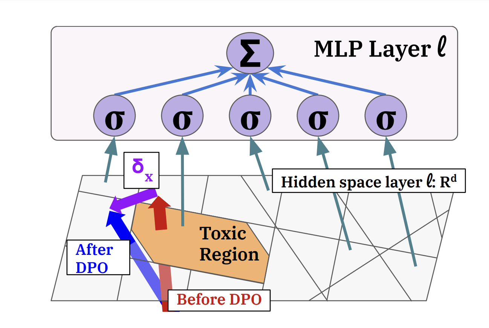

|
I am an undergraduate at the University of Michigan studying Computer Science with a minor in Mathematics. My primary focus is on making artificial intelligence systems safer, more interpretable, and better aligned with human values. More sepcifically, I aim to explore how large language models (LLMs) can operate ethically and effectively in diverse and dynamic contexts. At Michigan, I am involved with the Language and Information Technologies Lab and have worked alongside Dr. Andrew Lee and Prof. Rada Mihaclea where I have leveraged interpretibility to study toxicity in LLMs. Since this past summer, I have been interning at the Krueger AI Safety Lab at the University of Cambridge working alongside Prof. David Krueger, Dr. Ekdeep Singh Lubana, and Laura Ruis to develop new inference-time methods for model behavioral control. Most recently, I have also been working with Hidenori Tanaka at the Harvard Center for Brain Science to mechanistically study in-context learning. I first started doing interpretibility research with Neel Nanda through the Machine Learning Alignment and Thoery Scholors Program. Email / CV / Google Scholar |

|
|
|
|  |
Andrew Lee, Xiaoyan Bai, Itamar Pres, Martin Wattenberg, Jonathan K. Kummerfeld, and Rada Mihalcea ICML, 2024 (Oral) We study a popular algorithm, direct preference optimization (DPO), and the mechanisms by which it reduces toxicity. We first study how toxicity is represented and elicited in pre-trained language models (GPT2-medium, Llama2-7b). We then apply DPO to reduce toxicity and find that capabilities learned from pre-training are not removed, but rather bypassed. We use this insight to demonstrate a simple method to un-align the models, reverting them back to their toxic behavior. |
|
Website template source available here. |